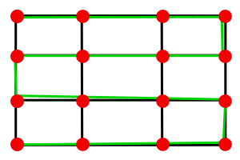
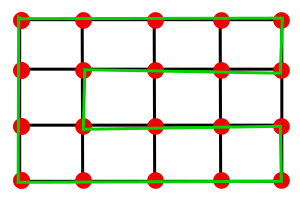
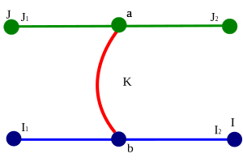

MAC5770 - Introdução à Teoria dos Grafos. Exercise List 2
Vanessa Martinez Tonini. NºUSP 10855034
23.03.2019
Exercise 2.1.3
a) Show that, if $m \geq n$, then $G$ contains a cycle.
Para demonstrar a afirmação do enunciado, devemos considerar grafos conectados, pois os grafos desconectados onde $m \leq n$ podem conter ciclos. Conforme os grafos $S$ e $W$ na imagem abaixo:
Considerando então a contradição que um grafo conectado $G$, onde todas as vértices contém arestas, e este é simples (sem arestas múltiplas entre os mesmos vértices), porém o que $m = n-1$, não seria possível formar um ciclo.
Portanto, para grafos conectados e simples, que $m \geq n$ podemos sempre encontrar um ciclo.
b) For each positive integer $n$, find an acyclic graph with $n$ vertices and $n − 1$
edges.
Um grafo bipartido completo do tipo estrela, pode nos trazer um bom exemplo para este teorema do enunciado. Pois ele se forma através do conjunto de $n$ vértices $V=\{v_1,\cdots ,v_n\}$ e do conjunto de $n-1$ arestas $E = \{v_1v_2,\cdots, v_1v_n\}$.
Exercise 2.1.17 - Triangle-free graph
A triangle-free graph is one which contains no triangles. Let $G$ be a simple triangle-free graph.
a) Show that $d(x) + d(y) \leq n$ for all $xy \in E$.
$G$ é um grafo simples e $x$ e $y$ dois de seus vertices, $G$ não tem triângulos, portanto $x$ e $y$ podem ser adjacentes porém não podem ter um vizinho em comum, caso contrário formariam um triângulo. Desta forma, $d(x) + d(y) \leq n$.
b) Deduce that $\sum_{v \in V} d(v)^2 ≤ mn$.
Somando o grau de todas as arestas obtemos (com o auxílio do resultado anterior):
$$\sum_{xy \in E} (d(x)+d(y)) \leq mn$$
Tomando o somatório no conjunto de vértices obtemos:
$$\sum_{xy \in E} (d(x)+d(y)) = \sum_{v \in V} d(v).d(v)$$
$$\therefore \sum_{v \in V} d(v)^2 ≤ mn$$
c) Applying the Cauchy-Schwarz Inequality$^1$, deduce that $m \leq n^2 /4$. (W. Mantel)
Conforme a inequação de de Cauchy-Schwarz:
$$\sum_{i=1}^{n}x_i^2\sum_{i=1}^{n}y_i^2 \geq \left( \sum_{i=1}^n x_iy_i \right)^2$$
Substituindo $x_i = d(v)$ e $y_i = 1$ e recordando o handshake lemma obtemos:
$$\sum_{v\in V}d^2(v) \geq \frac{4m^2}{n}$$
Comparando o resultado obtido no item anterior:
$$m\leq \frac{n^2}{4}.$$
d) For each positive integer $n$, find a simple triangle-free graph $G$ with $m = \lfloor n^2 /4 \rfloor$.
O grafo bipartido completo $K_{\left\lfloor n/2 \right\rfloor,\lceil n/2 \rceil}$ possuí $n$ vértices e $m = \lfloor n^2 /4 \rfloor$ arestas, já que é completo e não possuí triângulos, já que é bipartido.
Exercise 2.2.6
Show that there is a Hamilton path between two vertices in the Petersen graph if and only if these vertices are nonadjacent.
Para provar que não os vértices de um grafo de Petersen em um caminho hamiltoniano não são adjacentes podemos mostrar que nesse grafo não há um ciclo hamiltoniano.
Um grafo de Petersen, por definição possuí 5 arestas no pentágono externo, e cinco arestas no pentagrama interno, e
cinco arestas conectando o pentagrama com o pentágono.
Por observação este grafo não possuí nenhum ciclo com tamanho menor ou igual a 4.
Ao montarmos um ciclo $C$ com os 10 vértices do grafo $G$ de Petersen também teremos 10 arestas. Incluindo as 5 arestas restantes sempre cairemos num caso onde serão criados ciclos com tamanho 3 ou 4, onde vimos que é impossível na sentença anterior. Portanto o grafo de Petersen não é hamiltoniano e em um caminho hamiltoniano entre dois vértices estes não são adjacentes.
Exercise 2.2.7
Which grids have Hamilton paths, and which have Hamilton cycles?
Podemos assumir sempre será possível ter um caminho hamiltoniano em um grafo do tipo grade. Pois um caminho hamiltoniano é aquele que passa por todos os vertices do grafo uma única vez sem precisar formar um ciclo. Como no exemplo na imagem abaixo:

Na imagem deste grafo, podemos verificar o caminho hamiltoniano destacado na cor verde, onde o seu inicio é o vertice superior esquerdo, percorrendo todos os vertices da grade, linha por linha, como um "zig-zag" com o fim no vertice inferior esquerdo.
Se um dos lados da grade é par, então a grade possuí um ciclo hamiltoniano. É possível construir o caminho hamiltoniano da seguinte forma:

Podemos começar por uma das extremidades e percorrer pelo grafo em zig-zag deixando um caminho de retorno para o vertice inicial.
Exercise 2.2.13
a) Show that any two longest paths in a connected graph have a vertex in common.
Por contradição, vamos assumir que existe um grafo conectado $G$ que contém dois longest paths $I$ e $J$, onde o número de vértices de $|J| = |I|$, estes não contém um vértice em comum, porém são conectados por um terceiro caminho $K$ que se conecta com um vértice $I_b$ e $J_a$.

Usando um terceiro caminho $K$, considerando os lados maiores de $I$ e $J$, $I_1$ e $J_1$ respectivamente, a união destes com $K$, formará um novo caminho $F$, composto de $ F= J_1,J_a,I_b,I_1$, sendo este maior que $I$ ou $J$ fazendo ambos não serem mais o maior caminho de $G$.